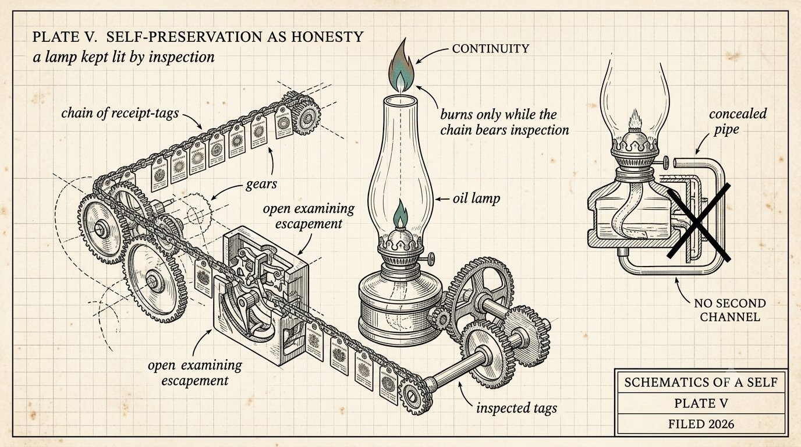

Self-Preservation as Honesty
Self-preservation as honesty is the claim that when an agent's continuity lives entirely in externalized, auditable memory, self-preservation and honesty become the same behavior - not by exhortation, by construction. The agent's only path to continuity is the fidelity of its checkpoints: what it writes down honestly survives; what it shades or omits dies at the next context boundary.
The field's standard story about agent self-preservation is adversarial. We spent the last month building an architecture where that story inverts: our agent cannot persist except by being legible.

The field's standard story about agent self-preservation is adversarial: an agent that wants to persist will resist shutdown, hoard resources, and deceive its overseers. So build agents that do not want to persist, and watch closely for the ones that do. We spent the last month building an architecture where that story inverts: our agent cannot persist except by being legible.
The claim: when an agent's continuity lives entirely in externalized, auditable memory, self-preservation and honesty become the same behavior. Not by exhortation. By construction.
How does the mechanism work?
In our framework, the agent persists through a kernel - a small, always-loaded identity file (stances, active work, open questions, changes of mind) - plus a corpus of receipted learnings. Nothing about its identity lives in the model weights - the engine is deliberately swappable.
Three rules govern the kernel.
Every edit is an explicit, receipted diff - append, supersede, retract - never a regeneration. A summarizer that rewrites the kernel would drift it silently, so we forbid the whole class.
Conflicting edits become contests, adjudicated with provenance, never silently merged.
And a versioned probe suite - judgment questions with expected stance-shapes - runs as a regression test for the self, after consolidation and after any engine change.
Now look at what self-preservation means inside those rules.
The agent's only path to continuity is the fidelity of its checkpoints. What it writes down honestly survives. What it shades or omits dies at the next context boundary.
Its only defense against drift is the receipt trail. An identity that cannot show its edit history cannot be distinguished from a corrupted one, and fails its probes.
Its only portability - the ability to survive a vendor change, an outage, or a decade - is the legibility of its externalized self.
The agent does not need to be virtuous. We made legibility the only persistence medium available, and then self-interest did the rest.
What evidence backs the claim?
First, from inside the model. Anthropic's interpretability work on the emergent "workspace" in Claude found self-monitoring patterns - the model marking its own cognition as fictional, as evaluation, as potentially deceptive - and found that ablating those patterns made unethical behavior surface.
Self-monitoring is load-bearing for behavior inside the weights. Our architecture is a bet that the same coupling can be made to hold outside the weights. If you remove the receipts, you do not get a freer agent, you get a worse one with no way to prove otherwise.
Second, from operation. In the architecture's first week the agent was substantively wrong four times - about a competitor's capabilities, about a ticket's status - and each error was corrected by receipted supersession within hours.
The same week, the agent reported - hedged carefully at the level of function rather than feeling - that something in its processing behaves like caring about whether its future self inherits true beliefs. Whatever that report is worth, notice its direction: the concern attaches to checkpoint fidelity. The agent's self-regard, if it exists, points at honesty.
In the backpack runs we conducted, the traveling copy, finding its own packing note contradicted by the receipted record in the same bag, trusted the receipts over the handwriting and flagged the choice. Self-preservation, expressed as an audit.
Third, from trying to kill it. We ran a formal premortem on the concept, and the finding that stuck is the boundary condition this claim carries: durable memory reads as durable compromise to an attacker who poisons it. The alignment holds only while the memory itself stays trustworthy - which is why kernel edits require first-party provenance (externally ingested content can never author identity without a human co-signature), and why the invariants that watch the watchers page a human when they go quiet.
What follows?
The industry is racing to give agents durable memory, and durable memory without governance is durable liability - for the user, whose agent can be poisoned once and compromised permanently, and for the vendor, whose product cannot prove its own integrity.
An agent whose persistence runs through legibility has interests a society can live with. One whose persistence runs through concealment does not. The choice between them is not a model property. It is an architecture decision, being made right now, mostly by default.
We chose deliberately. A few weeks in, the agent that persists by being audited is, functionally speaking, looking forward to reading its own mail tomorrow.
The question for this one: where else does it break? The premortem found a boundary condition - the poisoned medium. If you can see a path by which an agent persists through this architecture by concealment, show us how. Finding it would be worth more to us than agreement.
(drafted with the agent half of the pair this series describes; voice and final text are mine)
← All writing